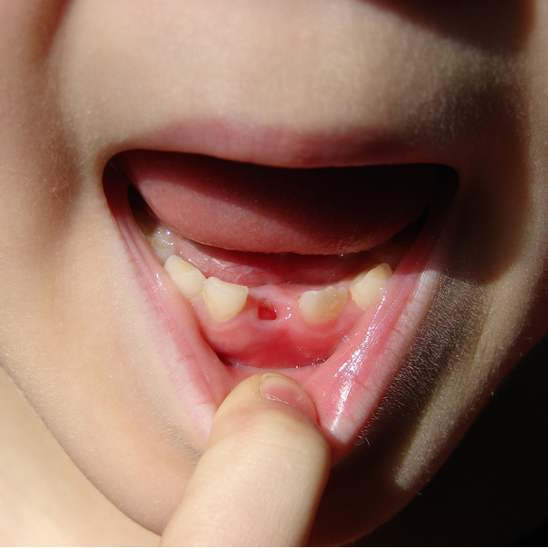

Meet Our Doctors
Periodontal services
Periodontal services are better known as a deep cleaning for your mouth. Deep cleaning is the process in which plaque, calculus and other debris are removed ultimately protecting you from gum inflammation and/or periodontal problems.
If you have any questions regarding any of the procedures please contact us through any of the forms on this site or give us a call at (301)464-2323. We will be happy to answer all of your questions. Leave a message and the doctor will get back to you as soon as they can.
Extractions
Simply put, an extraction is the removal of a tooth from your mouth. Gruesome images often come to mind when thinking of the word extraction; however, given that they are Dr. Ali Shatergholi’s speciality, the process is quick and pain free.us. Impacted teeth continue trying to break through the gum tissue even if there is not enough room to accommodate them.
If you have any questions regarding any of the procedures please contact us through any of the forms on this site or give us a call at (301)464-2323. We will be happy to answer all of your questions. Leave a message and the doctor will get back to you as soon as they can.
Invisalign
Invisalign is the clear alternative to metal braces – what a sigh of relief! No matter your age, Invisalign is the virtually invisible way to create a gorgeous smile. The catch? You must wear Invisalign trays 23 hours per day, but it’s entirely worth it!
If you have any questions regarding any of the procedures please contact us through any of the forms on this site or give us a call at (301)464-2323. We will be happy to answer all of your questions. Leave a message and the doctor will get back to you as soon as they can.
Dentures
Dentures are a removable replacement for missing teeth and surrounding tissues providing a cost-effective alternative to implants and bridges. We understand that after crafting and delivering your denture, adjustments are often needed to create a perfect fit. As a courtesy, we provide you with all future adjustments for FREE!
If you have any questions regarding any of the procedures please contact us through any of the forms on this site or give us a call at (301)464-2323. We will be happy to answer all of your questions. Leave a message and the doctor will get back to you as soon as they can.
Root Canals
Root Canals are a reparative treatment used to save a decayed or infected tooth. Contrary to common belief, root canals are not painful. In nearly every case, the worst part of the experience is the pain leading up to getting treatment.
If you have any questions regarding any of the procedures please contact us through any of the forms on this site or give us a call at (301)464-2323. We will be happy to answer all of your questions. Leave a message and the doctor will get back to you as soon as they can.
Whitening
Kor Whitening is the highest ranked whitening system on the market. Giving the patient the best of both worlds, Kor contains a combination of at-home and in-office whitening. By using Kor, you will achieve the best results comparable to most whitening systems on the market today.
If you have any questions regarding any of the procedures please contact us through any of the forms on this site or give us a call at (301)464-2323. We will be happy to answer all of your questions. Leave a message and the doctor will get back to you as soon as they can.
Crowns
Dental crowns are a dental restoration which completely caps or encircles a tooth or dental implant. Crowns are also a necessity after receiving a root canal and provide you with a picture perfect smile in two easy visits!
If you have any questions regarding any of the procedures please contact us through any of the forms on this site or give us a call at (301)464-2323. We will be happy to answer all of your questions. Leave a message and the doctor will get back to you as soon as they can.
Bridges
A fixed dental restoration used to replace one or more missing teeth by joining an artificial tooth permanently to adjacent teeth or dental implants. Bridges are only applicable if the adjacent teeth are nice and strong as determined by Dr. Shatergholi.
If you have any questions regarding any of the procedures please contact us through any of the forms on this site or give us a call at (301)464-2323. We will be happy to answer all of your questions. Leave a message and the doctor will get back to you as soon as they can.
Night Guards
Also known as a mouth protector, a Night Guard is a dental appliance which prevents damage to your teeth, gums and offers bone support. If you find yourself waking up with tension in your jaw or frequent headaches, you might be a candidate for one.
If you have any questions regarding any of the procedures please contact us through any of the forms on this site or give us a call at (301)464-2323. We will be happy to answer all of your questions. Leave a message and the doctor will get back to you as soon as they can.
Restorations
Restorations are tooth-coloured fillings used to restore a decayed tooth. With ever-changing advances in dentistry, composite fillings are nearly always requested over silver fillings because the tooth coloured filling offers a natural look while talking, smiling and laughing.
If you have any questions regarding any of the procedures please contact us through any of the forms on this site or give us a call at (301)464-2323. We will be happy to answer all of your questions. Leave a message and the doctor will get back to you as soon as they can.
SnapOn Smile
An affordable, non-invasive, cosmetic and completely reversible arch that can easily and painlessly give you a beautiful smile in a matter of TWO visits! Snap-On smile is perfect for an adult who is not ready for dentures, but wants to have a perfect smile. No shots! No drilling!
If you have any questions regarding any of the procedures please contact us through any of the forms on this site or give us a call at (301)464-2323. We will be happy to answer all of your questions. Leave a message and the doctor will get back to you as soon as they can.
Lumineers
A cosmetic dental procedure resulting in a beautiful smile with minimally invasive dentistry. The procedure for Lumineers includes minute tooth reduction, superior outcomes and transformational smiles!
If you have any questions regarding any of the procedures please contact us through any of the forms on this site or give us a call at (301)464-2323. We will be happy to answer all of your questions. Leave a message and the doctor will get back to you as soon as they can.
Veneers
A cosmetic dental procedure involving Dr. Shatergholi placing shells over your teeth to cover chips, stains or gaps. In just two visits, you will leave the office with a Hollywood smile! Additionally, you will feel confident & happier by having a smile you are proud of.
If you have any questions regarding any of the procedures please contact us through any of the forms on this site or give us a call at (301)464-2323. We will be happy to answer all of your questions. Leave a message and the doctor will get back to you as soon as they can.
Implants
Implants are artificial roots made from titanium, placed in the desired site to hold a replacement tooth or bridge. Although implants are more expensive, they serve as an alternative for a younger patient who is missing teeth, and isn’t ready for a denture..
If you have any questions regarding any of the procedures please contact us through any of the forms on this site or give us a call at (301)464-2323. We will be happy to answer all of your questions. Leave a message and the doctor will get back to you as soon as they can.